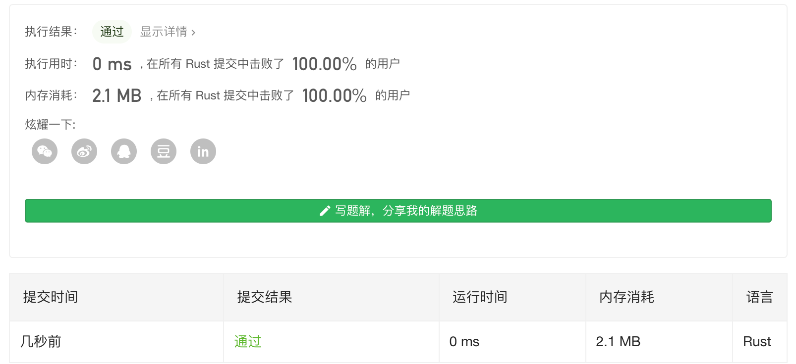

Leetcode 第19题 - 删除链表的倒数第N个节点(easy)
给定一个链表，删除链表的倒数第 n 个节点，并且返回链表的头结点。
示例：
给定一个链表: 1->2->3->4->5, 和 n = 2.
当删除了倒数第二个节点后，链表变为 1->2->3->5.
说明：
给定的 n 保证是有效的。
进阶：
你能尝试使用一趟扫描实现吗？
解题思路
这道题的难点是怎么找到倒数 第 n个节点,就好像 你如果不把每一颗盒子里面的糖都吃一遍,那么 你就没法确切的知道 有多少颗 酸的多少颗是甜的。 我们要知道 倒数第n个数 那必须要知道 最后一个数,才能相对的确定第 倒数第 n 个数。
那么 一种可行方法是 先遍历一遍链表 计算出链表有多少个值,然后可以确定 最后第 n个数的位置 其中一种方案 是 我们递归调用 然后从后向前回溯,就能找到 这也是 rust 里面相对便于实现的一种方法。
在rust 里面 操作链表 比较麻烦,我们 通常用 take() 来吧当前链表 拿到手,take 会把 当前链表的 替换为为nil 然后我们就能获取链表的所有权了。
递归栈 回溯
我们 先递归到底,然后到底之后给定的 n 就可以 减去 1,这样 从底部开始 减,那么 减到 第 n 个就是 0了,然后 我们 直接返回向上返回 它的 next 而不返回当前节点,这样就可以实现删除啦。
use std::borrow::BorrowMut; impl Solution { pub fn remove_nth_from_end(head: Option<Box<ListNode>>, n: i32) -> Option<Box<ListNode>> { let mut n = n; Solution::remove_nth_from_end_recursion(head,n.borrow_mut()) } pub fn remove_nth_from_end_recursion(head: Option<Box<ListNode>>, n: &mut i32 ) -> Option<Box<ListNode>> { let mut linlist: Option<Box<ListNode>> = head; match linlist.take() { None => {None}, Some(mut x) => { let next = Solution::remove_nth_from_end_recursion(x.next.take(),n); *n -=1; println!("{}",*n); if *n == 0 { return next ; }else{ x.next = next; return Some(x); } }, } } }